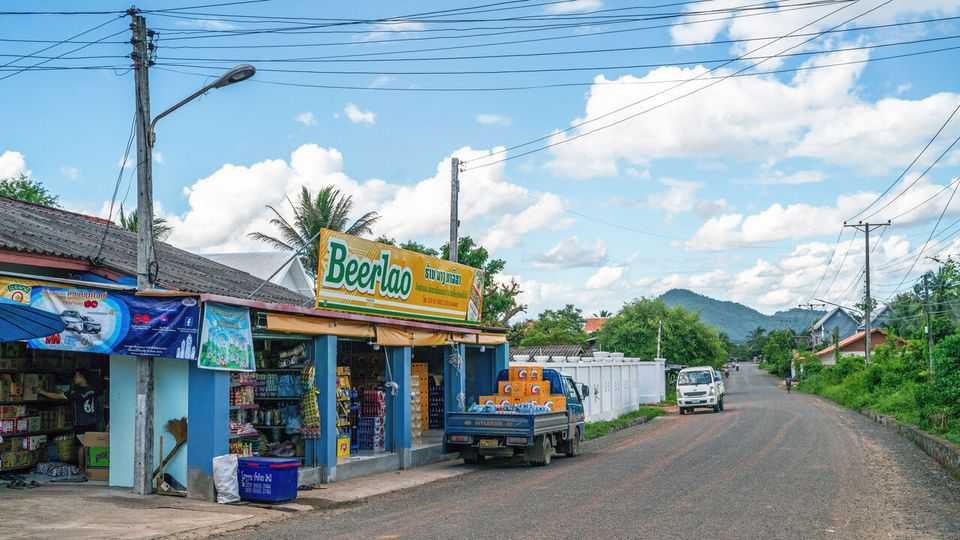

Beerlao: probably the most important lager in the world
Its country’s economy depends on it

Jul 30th 2026
BUT FOR a few crumbling villas, little French influence survives in Laos nearly 73 years after the end of colonial rule. It is China that shapes the fortunes of its poor and landlocked southern neighbour. But one French legacy lingers. In 1973 French and Lao businessmen founded a joint venture, Brasseries et Glacières du Laos. Now called the Lao Brewery Company (LBC), it sits in a different joint venture, between the state and Carlsberg, a Danish giant. Its signature product, Beerlao, probably matters more to its home country than any other beer in the world.
Beerlao is everywhere in Laos. Its branding is emblazoned on T-shirts and billboards. A marketing campaign fusing the drink with national identity (“Be Lao”) has helped, as has Laotians’ prodigious thirst for beer. Kirin, a Japanese brewer, puts this at 55 litres per person a year, more than in any other Asian country. Nearly 90% of that is Beerlao, says Carlsberg, for which Laos, with just 7.9m people, is the second-biggest Asian market after China.
Its success is not a mystery. European malt and hops are combined with locally grown jasmine rice, making a light, faintly sweet lager (often drunk with ice by locals). It wins international awards, too, and on travel forums backpackers swear by it, loving both the taste and the price—a 640ml bottle costs around 20,000 kip ($0.90).
In 2024 sales of the stuff amounted to $600m, equivalent to some 3.5% of the country’s GDP. That year LBC also paid 5.1trn kip ($240m) in taxes, a third more than the year before, making it comfortably the country’s largest taxpayer. Exports to the Asian region are growing.
Yet celebrating Beerlao leaves a hangover. Its success reflects the economy’s moribund state. One-party rule has failed to kick-start other industries; the thriving ones—hydropower and mining—create too few jobs. LBC should be a model for others, argues Phouphet Kyophilavong of the National University of Laos, of how foreign investment can boost the economy. But for now LBC is drinking alone. ■
For exclusive coverage of Asian politics, economics and security, sign up to Asia Bulletin, our weekly subscriber-only newsletter.